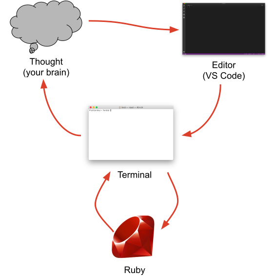
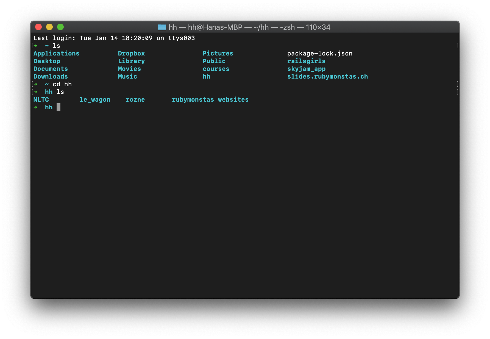
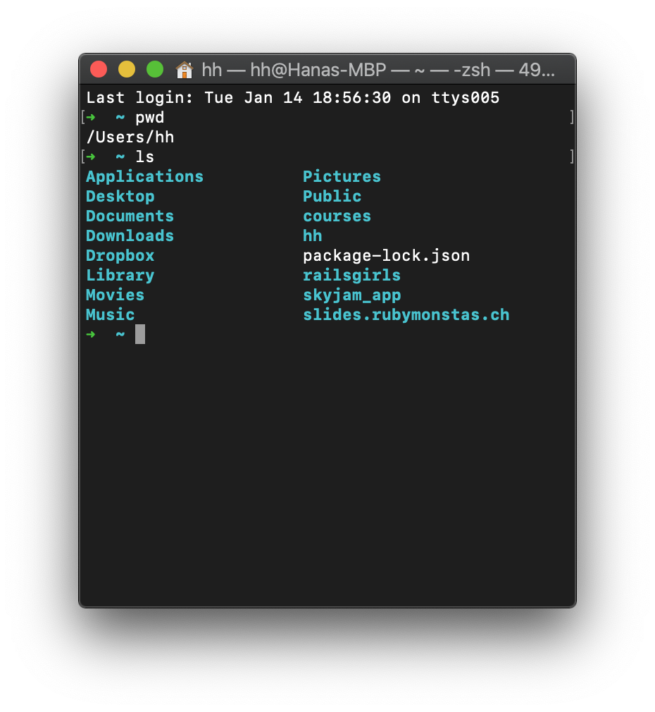
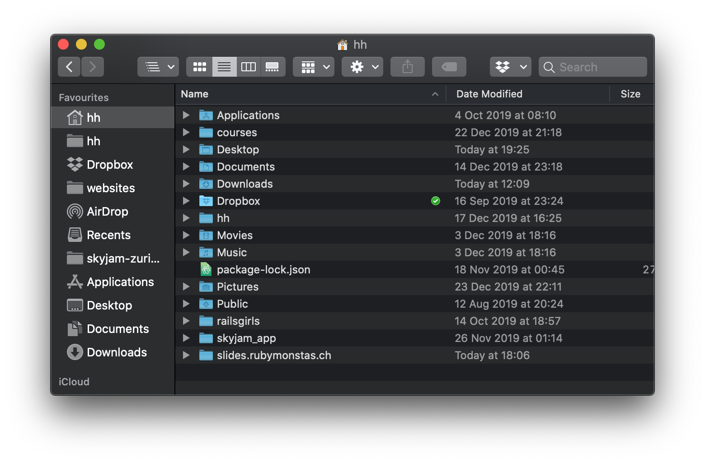
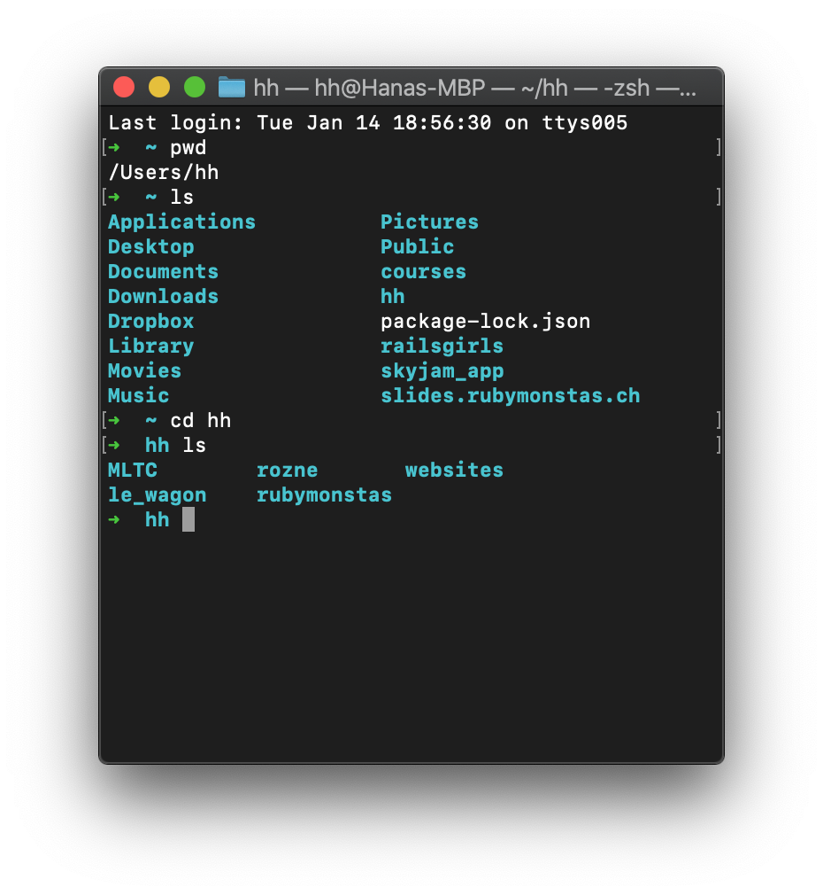
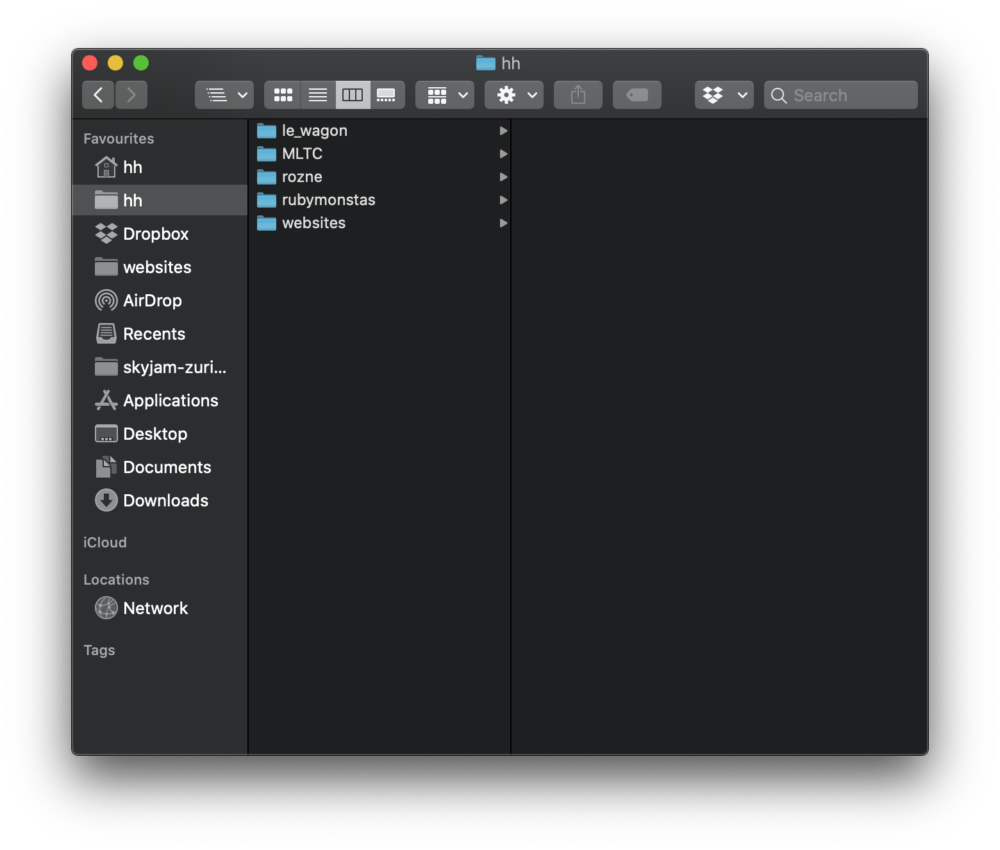
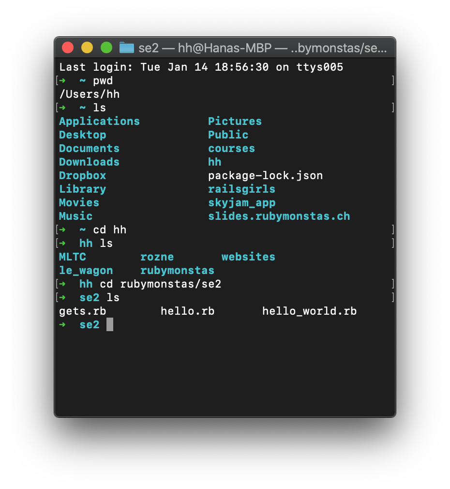
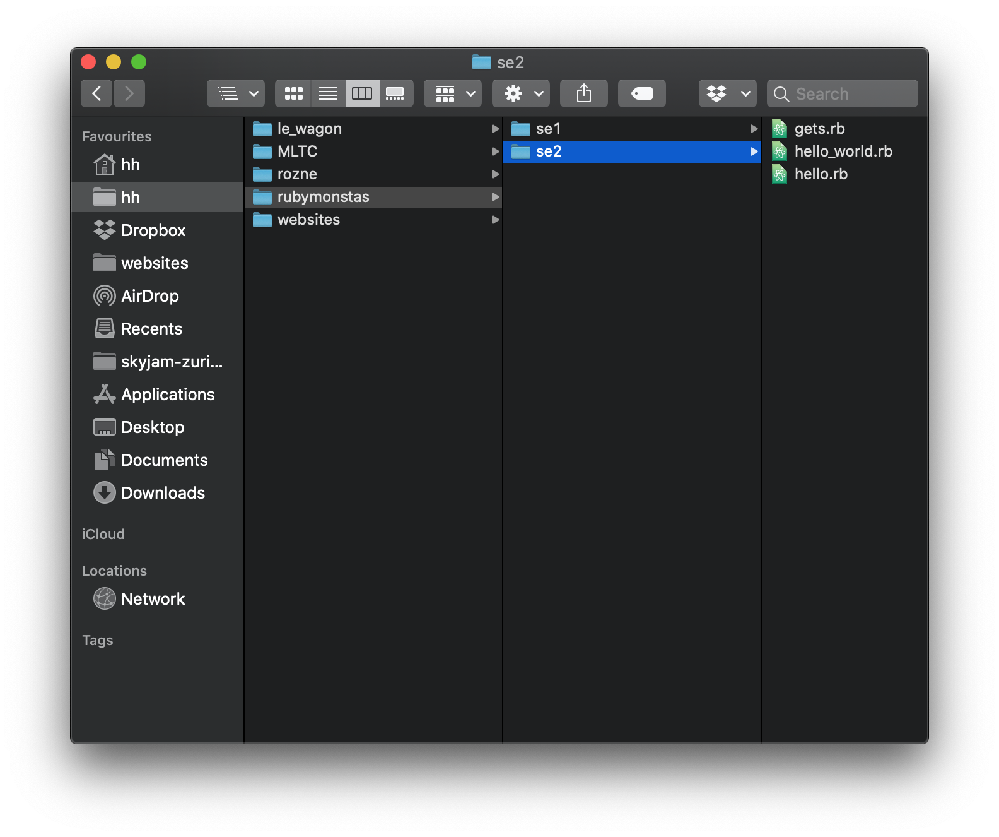
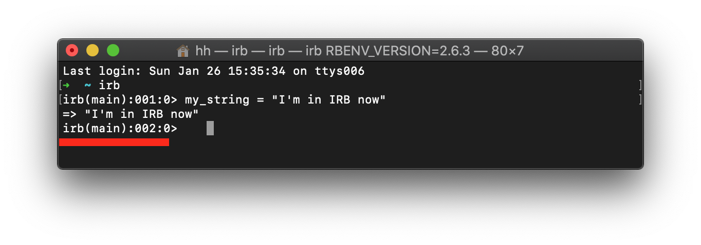

Ruby Monstas
Programming workflow
Programming workflow
Programming workflow
- Think about what you want to do
- Switch to your editor
- Edit the code
- Save the file
- Switch to the terminal
- Run your code
- Watch what it does
- Go to 1.
Command line
Command line
Is always in a working directory
You can do most things you can do in a graphical interface
You can do a lot of things quicker than with a graphical interface (once you’ve practiced a bit)
Command followed by arguments (separated by spaces)
Cryptic commands might seem scary at first
Basic command line commands
pwdstands for 'print working directory'
cdstands for 'change directory'
lsstands for 'list' the files and folders in directory
Working directory
...is the folder where you currently are
pwdprints out your working directory,
lslists all files and folders  
cdchanges the directory and
lslists all files and folders  
cd rubymonstas/se2changes the directory directly to se2  
How to use cd command
cd YOUR-FOLDERchanges your working directory to the selected folder
cd YOUR-FOLDER/ANOTHER-FOLDERchanges your working directory to the selected folder
cd ..takes you one level up
cd ../..takes you two levels up
Command line history and autocompletion
You can access the history of previous commands you entered with ↑
Go back and forth with ↑ and ↓
You can autocomplete the name of the file with Tab
Try it now!
Hello world, again!
- Open your editor (Visual Studio Code)
- Create a new file (Ctrl + N or ⌘ + N)
- Type:
puts "Hello world, again!" - Save the file as
hello_world.rb
(Ctrl + S or ⌘ + S)
Important: Know in what directory you saved the file!
Hello world, again!
- Open the terminal ("Powershell" or "Terminal")
- Change to the directory using the
cd
command (use Tab for autocompletion of directory names) - Run your code:
ruby hello_world.rb
Frustration curve
To avoid the frustration curve
Make tiny changes (ideally only on one line)
Check if it works right away
If it doesn't, think about why (read error messages closely)
Repeat!
IRB and command line are two different worlds
IRB lives in the terminal but you use ruby language
You can have multiple terminals open: one with irb and one with the command line.
Entering and exiting IRB
You enter IRB by typing
irb
You exit IRB by typing
quitor
exitor pressing Ctrl + D
Additional Resources
What questions do you have?